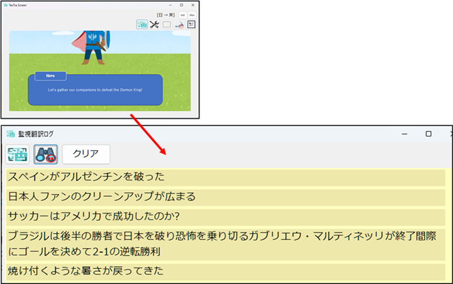
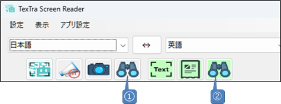
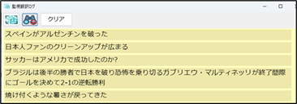
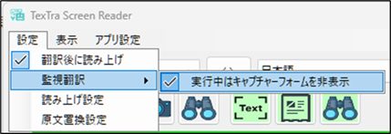

監視翻訳
動画やゲームを表示した画面上で、範囲を指定して、
その部分で変化していくテキストを連続的に翻訳します。

メイン画面

① 監視翻訳を開始／停止します。(CTRL+SHIFT+F2)
フレーム画面の枠内のテキストを読み込み、翻訳を行います。
② 監視翻訳ログ画面を表示します。

メニュー＞設定＞翻訳後に読上げ
読上げをON／OFFします。
メニュー＞設定＞監視翻訳
監視翻訳についての設定を行います。
